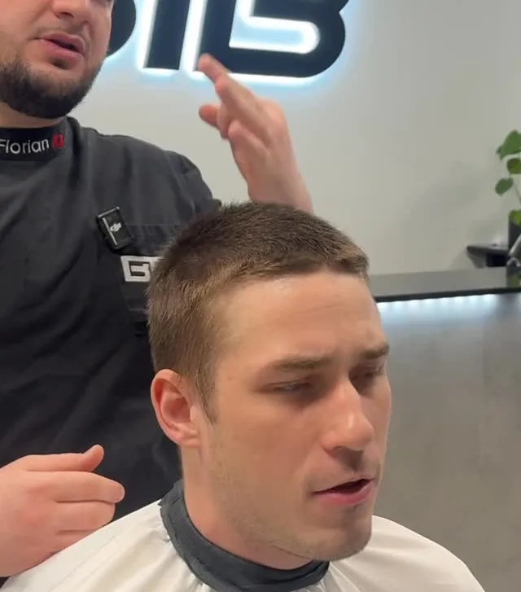
Haircut
Van een zachte taper tot een strakke skin fade, afgewerkt zoals jij het wil dragen.
Florian en Erion luisteren eerst, en knippen dan. Je stapt buiten met een fade die klopt en een baard die strak staat.
Welkom in je nieuwe ritueel
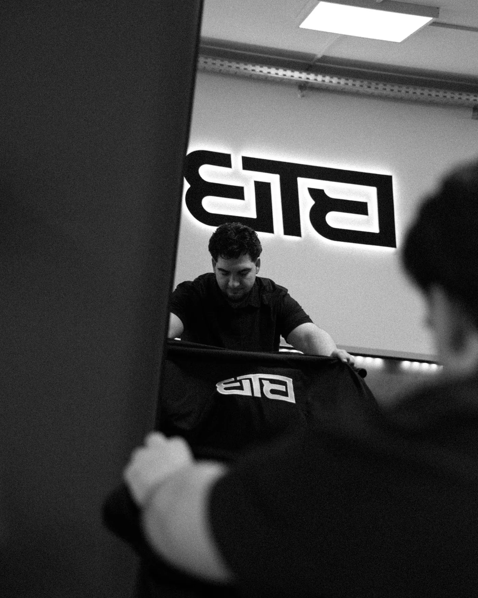
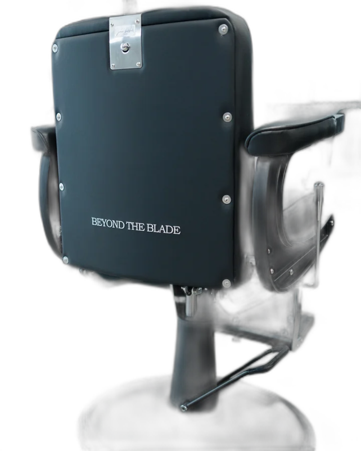
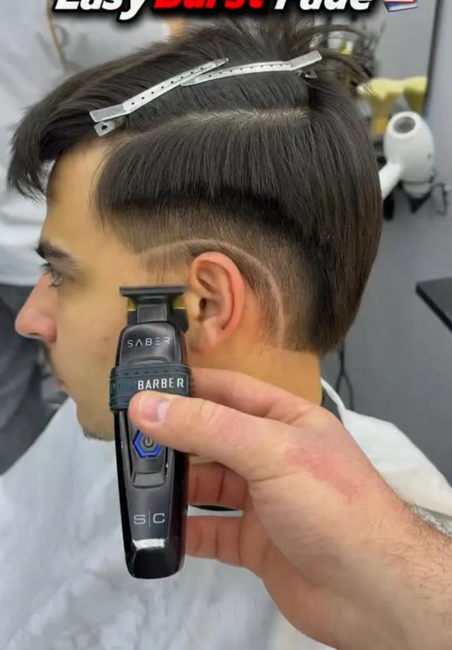
Een barbershop met stijl en karakter. Strak, eerlijk en met oog voor elk detail. Hier kom je voor een look die blijft hangen.
Van een zachte taper tot een strakke skin fade. We kijken naar je haar, je gezicht en hoe je het zelf wil dragen.
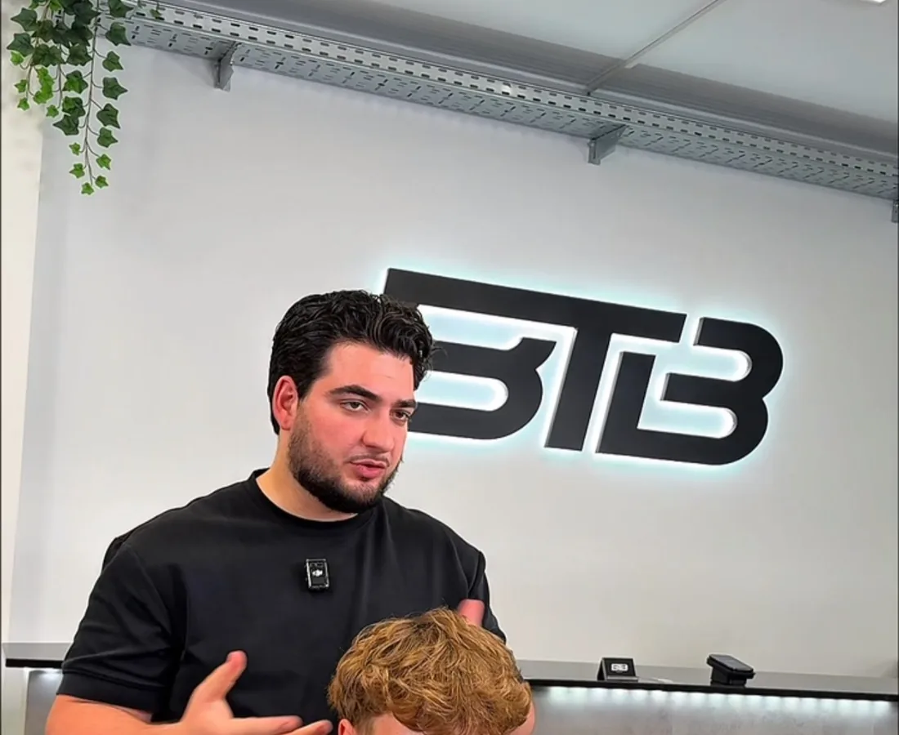
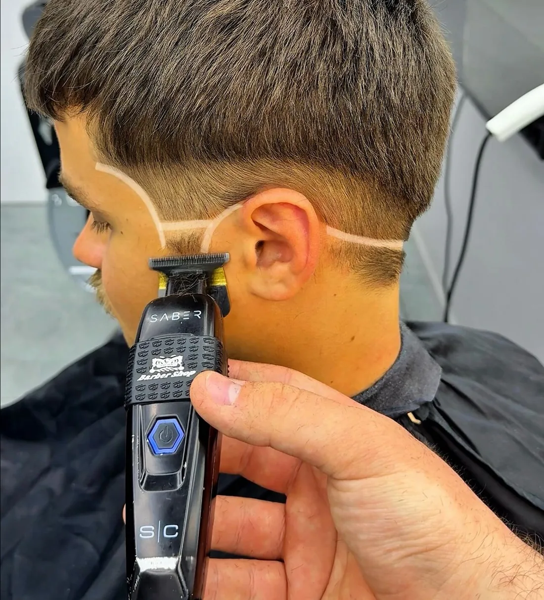
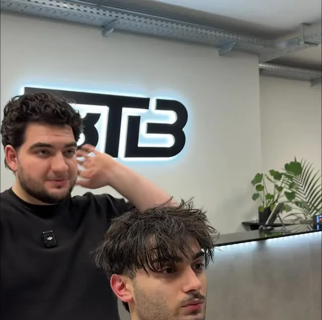
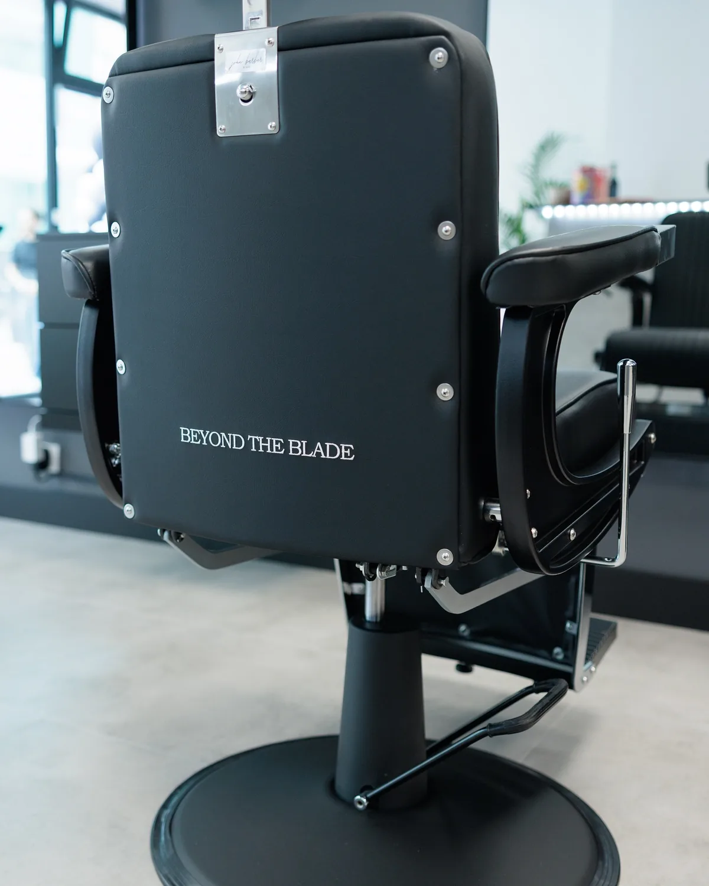
Twijfel je welke fade bij je past? Dan zeggen we het je eerlijk.Kom langs
Twee keuzes, allebei met dezelfde aandacht. Je boekt ze online in een paar tikken.

Van een zachte taper tot een strakke skin fade, afgewerkt zoals jij het wil dragen.
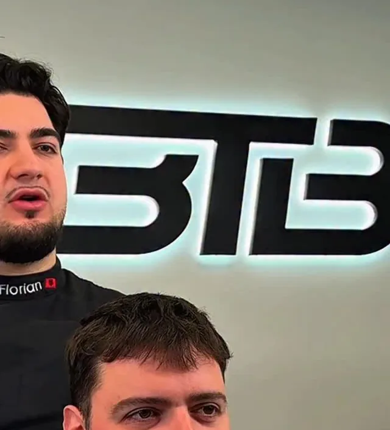
Je kapsel en je baard in één beurt. De lijnen strak, de overgang zacht.
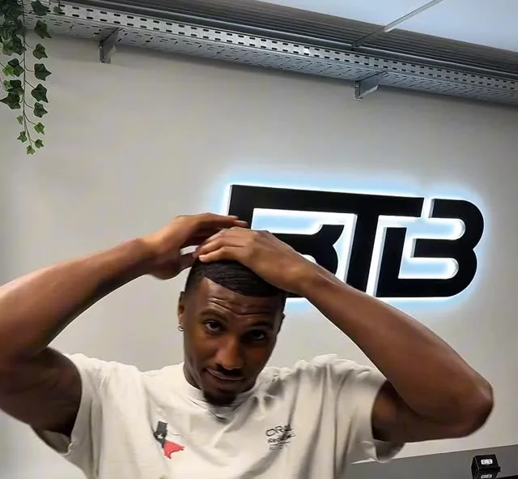
Een frisse snit cadeau doen? Via Fresha stuur je een bon voor een volgend bezoek.
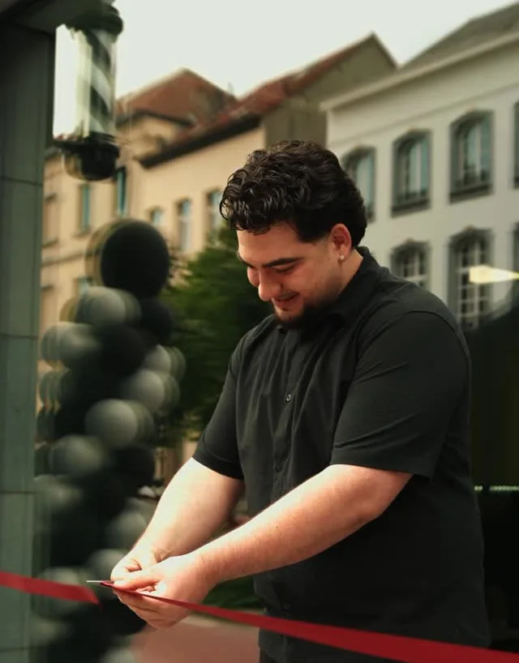
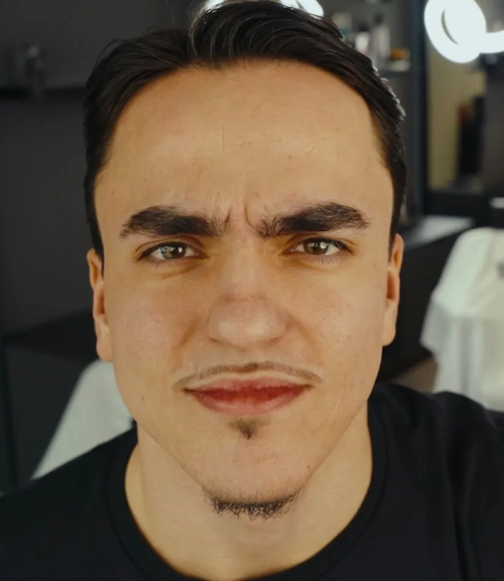
Florian opende de shop aan de Leopoldstraat en filmt er zijn werk voor duizenden volgers op Instagram en YouTube. Erion kwam het team versterken, met dezelfde passie voor het vak en hetzelfde oog voor detail.
"Welkom in je nieuwe ritueel."
329 reviews op Google, en ook op Fresha staan we op 5,0. Dat danken we aan iedereen die terugkomt.
"Florian verstond binnen de 5 minuten wat ik vroeg en ben voor de eerste keer in maanden tevreden naar buiten gestapt van een kapper/barber."
"Vriendelijk, toffe sfeer, lieve mensen. Ik ga er altijd buiten met een leuk en mooi kapsel."
"Goede kapper als je goed gezet wil worden. De kappers zijn ook toffe en chille mannen."
Kies je behandeling, je barbier en je moment. Je krijgt meteen een bevestiging.
In de stoel bespreken we wat je wil. Twijfel je? Dan zeggen we eerlijk wat bij je past.
Afgewerkt tot in de nek, met een tip om het thuis zelf goed te stylen.
Liefst wel. Via Fresha kies je zelf je moment en ben je zeker van je plek. Je krijgt meteen een bevestiging.
Reken op een half uur. Met je baard erbij duurt het iets langer.
Ja. Bij het boeken kies je Florian of Erion.
Er is parking in de buurt, en het openbaar vervoer stopt vlakbij.
Zeker. Je koopt ze online via Fresha en stuurt ze zo door.
Kies je moment online en je weet meteen waar je aan toe bent. Elke dag open, van 9 tot 18 uur.
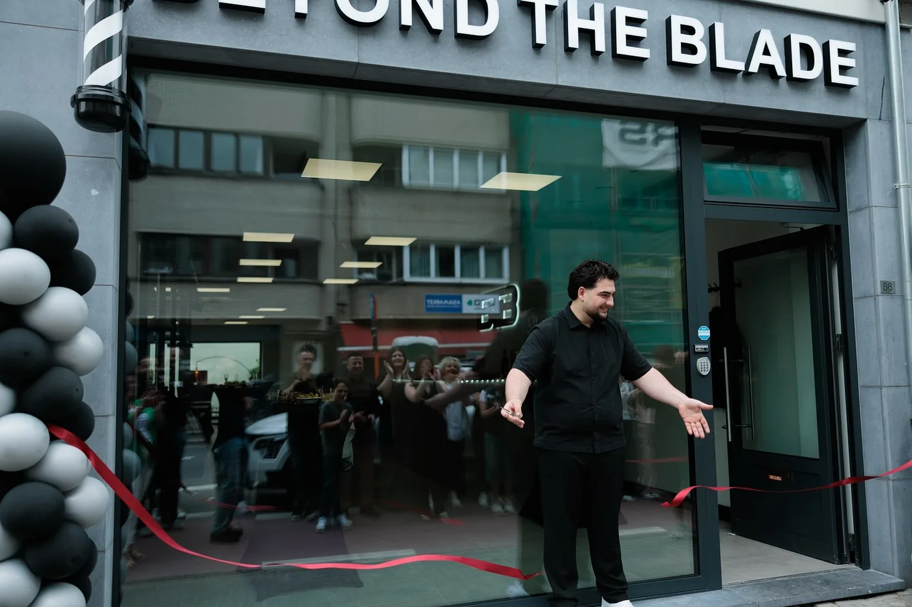
Ik maakte deze demo voor jullie om te tonen wat er kan. Na een kort gesprek maak ik er iets veel persoonlijkers van, helemaal naar jullie wens.
Vrijblijvend. Ik kom langs of we bellen.
Op maat, op jullie eigen domein.
Geen voorschot. Jullie betalen pas als alles klaar is.
Hosting, domeinnaam en kleine wijzigingen, zoals nieuwe openingsuren.
Omdat een voorbeeld meer zegt dan een mail. Zo zien jullie meteen wat er kan, en het kost jullie niets.
Nee. Het gesprek is vrijblijvend. Vinden jullie het niks, dan is het daarmee gedaan.
Na ons gesprek staat jullie site binnen 10 tot 14 dagen online.
Zeker. Jullie domeinnaam kan gewoon blijven, de nieuwe site komt in de plaats van de oude.
Nee, dat doe ik op basis van ons gesprek. Eigen foto's zijn mooi meegenomen, maar niet nodig om te starten.